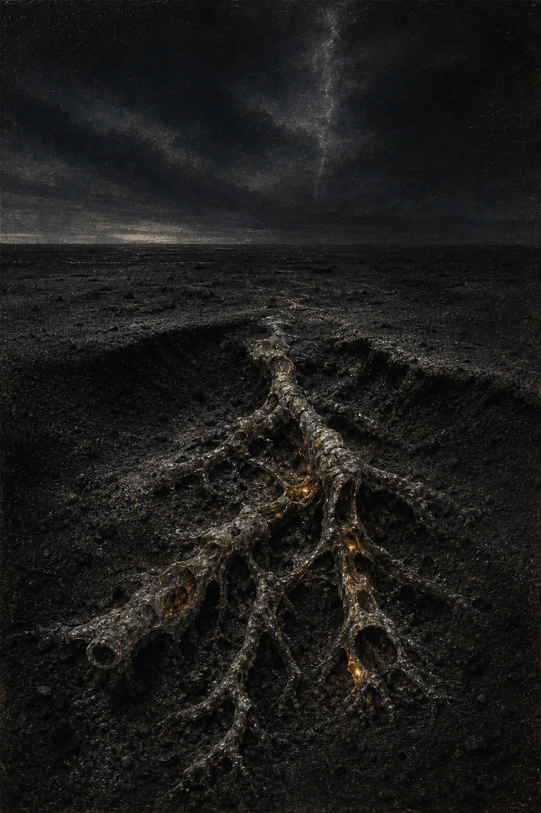

Reality is given. We receive it. We respond.
This is the Pattern of Becoming. It unfolds through three responsibilities: the Duty to Become, the Right to Become, and the Right to Remain. The Two Laws of Inquiry and Six Commitments of Practice below help us practice that pattern without mistaking growth for surrender, intensity for truth, or authority for exemption from correction.
Truth Before Comfort
Reality does not negotiate with human preference. We improve our understanding not by defending what we wish were true, but by surrendering what evidence shows to be false.
Humility Before Certainty
Humility is not the absence of confidence. It is the refusal to mistake confidence for certainty, keeping every honest answer open to better evidence.
Experience Deserves Respect
Personal experience may transform a life, but it must never be used to dominate another person. Public claims about reality require public evidence.
Character Is the Measure
Ideas are judged not by how confidently they are proclaimed, but by the lives they produce: greater honesty, humility, and compassion, or arrogance, fear, and self-deception.
No Person Is Beyond Correction
No title, achievement, mystical experience, or revelation places a human being beyond correction. The greater a person's influence, the greater their obligation to remain teachable.
Disciplined Curiosity
Curiosity that never submits to evidence drifts into fantasy. Discipline that never asks a new question hardens into dogma. Wisdom requires both.
Responsible Freedom
Every person deserves the greatest freedom compatible with the equal dignity, safety, and freedom of others. Growth that depends on diminishing another person is not apotheosis. It is ego.
The Living Path
Apotheosis is not a destination or a permanent state of enlightenment. It is a daily practice: to seek honestly, live compassionately, and become slightly wiser than we were yesterday.

